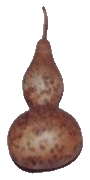

Gérard Gillig, ex-cougourdonnier dans le Vaucluse cultivait et "travaillait" des cucurbitacées d'un genre particulier appelé Lagenaria.

Découvrez :
- cet ancien métier,
- ce que créait GG le Cougourdonnier,
- les courges du genre lagenaria,
- la galerie de photographies de différents objets créés.